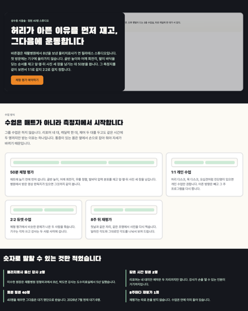
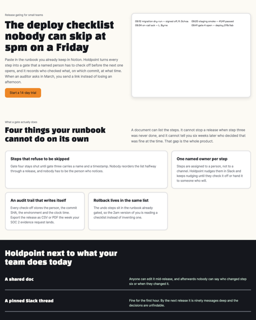
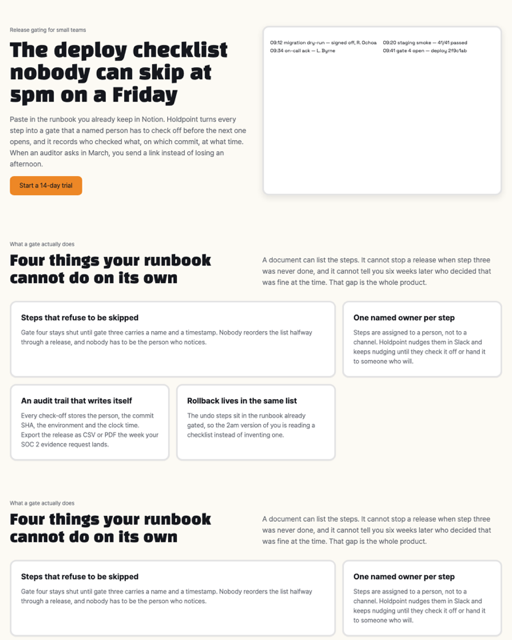

증거로 짓는 빌드 머신, Claude Code 플러그인The evidence-grounded build machine, a Claude Code plugin
상상하지
않는다.
It doesn't
imagine.
Visigner v2는 디자인을 감으로 그리지 않습니다. 실제 페이지 42장의 캡처 증거로 빌드를 접지하고, 레시피가 뒷받침하지 않는 숫자는 기계가 거부합니다. 랜딩과 상세페이지, 앱 UI, 브랜드, 토큰까지 전부 이 규율 위에서. Visigner v2 doesn't design from vibes. Builds are grounded in captured evidence from 42 real pages, and any number the recipe can't back is mechanically refused. Landing pages, Korean detail pages, app UI, brand, tokens: all on that discipline.
/plugin marketplace add elon-choo/visigner
/plugin install visigner@visigner
/plugin uninstall 한 줄.
Runs on macOS, Linux, Windows. No API key. Remove with one /plugin uninstall.
$ librarian-inject '{"category":
"saas-marketing-site"}' --variance 8
Retrieved exemplar: resend
role: positive · score: 0.86
directive: imitate THIS exemplar's
technique, not a generic guideline
$ anti-ai-eval.js docs/index.html
verdict: clean · tells: 0/22
$ anti-pattern-check.js --category
machine hits: HIGH 0 · exit 0
전과 후, 같은 요청, 다른 기계Before and after: same ask, different machine
v1은 만든 뒤에 채점했습니다. v2는 만들기 전에 실제 페이지의 증거로 접지하고, 만든 뒤에 모든 숫자와 라벨이 그 증거로 소급되는지 검사합니다. 소급이 안 되면 아래처럼 됩니다. v1 graded after the fact. v2 grounds the build in real-page evidence before code, then checks that every number and label traces back to that evidence after. When it doesn't trace, this happens.
제출된 주장 · 근거 없음Submitted claim · unsupported
999명이 선택한 디자인
출처: 없음. 레시피에 존재하지 않는 수치.Source: none. Numbers absent from the recipe.
근거 있는 빌드 · 소급 가능Grounded build · traceable
색과 간격, 서체는 레시피의 실측 토큰colors, spacing, type from measured tokens
소급 안 되는 수치는 페이지에 싣지 않는다. 그게 규칙.A number that can't trace doesn't ship. That's the rule.
$ node build-honesty-check.js page.html --recipe recipe.md
REFUSING — build contains concrete metric content that does not trace to its recipe or brief;
do not ship or invent support for it.
UNSUPPORTED number "9,999,999" · UNSUPPORTED number "999" · exit 1빌드 정직성 게이트, build-honesty-check.jsThe build-honesty gate, build-honesty-check.js
지어낸 숫자는,
여기서 끝납니다.
Fabricated numbers
stop here.
9,999,999원
한국형 표기까지 봅니다. 9,999,999원이나 999명처럼 단위가 붙은 수치도 레시피에 없으면 exit 1. 이 게이트는 저장소의 회귀 테스트가 매 푸시마다 고정합니다. Korean unit-adjacent forms included: 9,999,999원 or 999명 exit 1 when the recipe can't back them. Pinned by this repo's regression tests on every push.
근거의 출처Where the evidence lives
상상이 아니라,
캡처입니다Captured,
not imagined
빌드가 접지되는 코퍼스입니다. 실제로 렌더해 타일과 본문, 실측 스타일까지 뜬 페이지 42장. 잘된 페이지만이 아니라 반면교사도 기록합니다. 첫 한국 positive 상세페이지가 이번 v2에 들어왔습니다. The corpus a build grounds into: 42 pages actually rendered and captured, tiles to body text to measured styles. Not just the good ones. Negative exemplars are on file too, and the first Korean-positive detail page landed in v2.
stripeSaaS 마케팅SaaS marketing모범positivelinearSaaS 마케팅SaaS marketing모범positiveresendSaaS 마케팅SaaS marketing모범positive이 페이지의 근거 ·86retrieved ·86raycastSaaS 마케팅SaaS marketing모범positivevercelSaaS 마케팅SaaS marketing모범positivesupabaseSaaS 마케팅SaaS marketing모범positive29cm·mongdol한국 상세페이지Korean detail page첫 한국 모범first Korean positive29cm·hata한국 상세페이지Korean detail page중립neutralteenage·eng커머스 제품 상세commerce product page모범positivepudding에디토리얼editorial모범positivewadiz·400620한국 크라우드펀딩Korean crowdfunding반면교사negativewadiz·403454한국 크라우드펀딩Korean crowdfunding반면교사negative레퍼런스에 판단력을 달았습니다References, with judgment attached
심각도 상severity highreasoning/saas-marketing-site.json
캡처는 "이렇게 생겼다"만 압니다. v2의 추론 사이드카는 카테고리마다 언제 적용하고 언제 피할지를 붙입니다. if/then 규칙과 안티패턴, 12개 카테고리 전부. 아래는 이 페이지가 실제로 따른 규칙입니다. A capture only knows what a page looked like. The v2 reasoning sidecar attaches when to apply and when to avoid: if/then rules plus anti-patterns, for all 12 categories. Below are the rules this very page was built under.
if_data_heavy →
제품의 실제 상태를 읽히게 보여라. 블러와 글래스 효과는 비본질 프레임에만.Show a readable real product state; reserve blur or glass for nonessential framing.
if_enterprise_buyers →
보안과 컴플라이언스, 고객 증거는 먼 푸터가 아니라 제품 메커니즘 옆에 둬라.Place security, compliance, and customer proof beside the mechanism, not in a distant footer.
if_new_category →
추상적 플랫폼 장점을 말하기 전에, 전과 후의 워크플로부터 설명하라.Explain the before-and-after workflow before naming abstract platform benefits.
설명 말고, 페이지를 보여드립니다Enough describing. Here are the pages.
아래 세 장은 플러그인 안에 실제로 들어 있는 스타터 페이지입니다. 설치하면
skills/detail-page/assets/starter/에 그대로 딸려오고, 브리프에 맞춰 갈아끼우는 출발점입니다.
썸네일은 그 파일을 지금 그대로 렌더해서 찍은 화면이지, 상상해서 그린 목업이 아닙니다.
These three are starter pages that actually ship inside the plugin, installed to
skills/detail-page/assets/starter/ as the starting point you replace per brief.
Each thumbnail is that file rendered as it stands — not a mockup drawn from imagination.

starter/landing.html
마케팅 랜딩marketing landing

starter/pricing.html
요금제 비교plan comparison

starter/settings.html
앱 설정 화면app settings screen
캡처 조건: 1280×1600 뷰포트에서 2배 스케일로 렌더한 뒤 512×640으로 리샘플했고, 세 파일 모두 콘솔 에러 0으로 로드됐습니다.
직접 확인하려면 설치 후 skills/detail-page/assets/starter/의 파일을 브라우저로 여세요.
Capture: rendered at a 1280×1600 viewport at 2× scale, resampled to 512×640; all three loaded with 0 console errors.
To check for yourself, open the files in skills/detail-page/assets/starter/ after installing.
무엇을 파는 가게인지
한 장 적어 넣으면 됩니다.
Write down what the
business actually is.
스타터를 손으로 고치는 대신, 조립기가 부품 40개 중에서 골라 페이지를 세웁니다. 아래는 그렇게 나온 결과를 그대로 찍은 화면입니다. 여기 나오는 가게들은 예시로 지어낸 곳이고, 각 페이지 하단에 그렇게 적혀 있습니다. Instead of editing a starter by hand, the composer picks from 40 modules and stands the page up. Below is what came out, photographed as it stands. The businesses in them are invented examples, and each page says so in its own footer.

case-cafe-subscription
게이트 통과gate: pass

case-pilates-studio
게이트 통과gate: pass

case-saas-release
게이트 통과gate: pass

그리고 이건, 통과하지 못한 조립본입니다. And this is the build that did not pass.
바로 위 SaaS 브리프에 섹션 하나를 그대로 한 번 더 붙인 것입니다. 조립 자체는 됩니다. 조립기는 문법을 집행하지 않으니까요. 막는 쪽은 그다음에 도는 게이트고, 무엇을 어겼는지 이름을 붙여 알려줍니다. It is the SaaS brief above with one section repeated verbatim. It assembles fine, because the assembler does not enforce the grammar. What stops it is the gate that runs next, and it names what was broken.
adjacent-same-type이웃한 두 섹션이 같은 종류입니다two neighbouring sections are the same typeadjacent-layout-archetype둘 다 같은 배치를 씁니다both use the same layoutadjacent-variant-diversity갈라진 축이 하나도 없습니다not one axis differs between themtype-archetype-repeat같은 조합이 페이지에서 두 번 나옵니다the same pairing appears twice on the page
node scripts/grammar-lint.js composer/case-saas-release-refused/selection.json
종료 코드 1. 통과한 세 건은 0.
exits 1. The three that passed exit 0.
설치하면 skills/detail-page/factory/에 부품 40개와 조립기, 그리고 위 네 건의 브리프가 그대로 들어옵니다.
직접 돌려보려면 node scripts/composer-run.js composer/case-cafe-subscription/brief.json composer/case-cafe-subscription,
게이트는 node scripts/grammar-lint.js composer/<run>/selection.json. 앞의 세 건은 0, 거부본은 1로 끝납니다.
같은 브리프를 다시 넣으면 바이트까지 같은 HTML이 나옵니다. 각 타일의 선택 파일 해시와 페이지 해시, 두 종료 코드는
factory/site-build/shots/g54k/manifest.json에 적혀 있습니다.
Installing brings skills/detail-page/factory/ with it: 40 modules, the composer, and the four briefs above.
To run one yourself: node scripts/composer-run.js composer/case-cafe-subscription/brief.json composer/case-cafe-subscription;
for the gate, node scripts/grammar-lint.js composer/<run>/selection.json. The first three exit 0, the refused one exits 1.
Feed the same brief again and the same HTML comes back, byte for byte. Each tile's selection hash, page hash and both exit codes are
recorded in factory/site-build/shots/g54k/manifest.json.
숫자 조작을 거부하는 도구가
제 숫자를 지어내면, 끝입니다.
A fabrication-refusing tool that
fabricates its own stats is done for.
그래서 이 페이지의 모든 수치는 출처를 답니다. 재현은 지금 명령을 돌리면 다시 나오는 값이고, 기록은 변경 이력the changelog과 git 이력에 남은 값입니다. So every figure on this page carries provenance. Rerun means the command returns it right now. Record means it lives in the changelog and git history.
ls references/corpus/records | wc -l
node --test skills/detail-page/scripts/tests/
node reasoning-validate.js → PASS 12/12
설치 두 줄. 그다음은 전부 자동Two lines. Everything after is automatic
다음 저장부터,
당신의 페이지도 이 규율로.
From your next save,
your pages get this discipline.
*.html을 저장하는 순간 채점이 자동으로 돌고, 픽셀 비평용 브라우저가 없으면 백그라운드에서 한 번 알아서 설치됩니다. 외울 명령은 없습니다. Save an *.html and the grade fires on its own. If the pixel-critique browser is missing it installs itself once, in the background. Nothing to memorize.
설치install
클로드 코드 v2.1.100 이상claude code v2.1.100+/plugin marketplace add elon-choo/visigner
/plugin install visigner@visigner
/plugin uninstall 한 줄.
Nothing to lose. Remove with one /plugin uninstall.